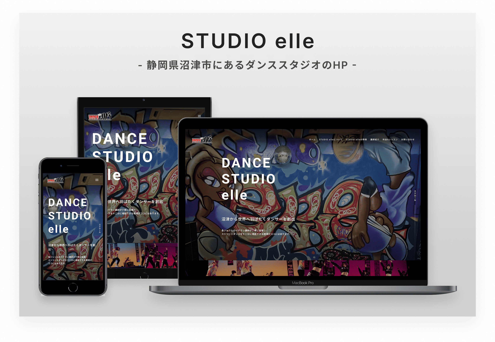
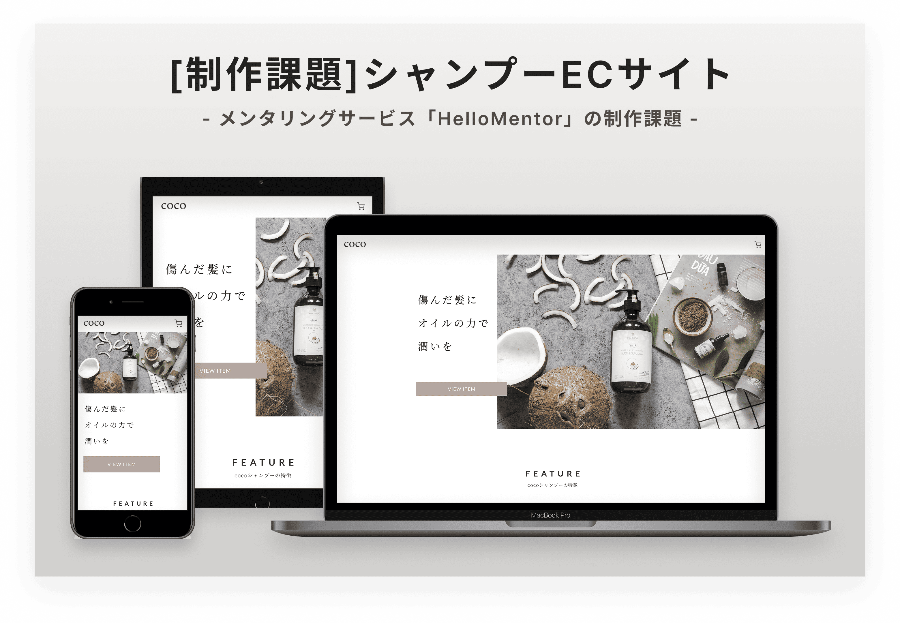

- 実案件
- STUDIO制作
Dance Studio elle様
静岡県沼津市にあるダンススタジオのHPを制作いたしました。
Works

メンタリングサービス「Hello Mentor」の課題として制作。 デザインカンプをもとにHTML/CSSで実装し、レビューを受けながら改善をおこないました。
活用サービス 「Hello Mentor」
About
Point
BEMやFLOCSSを活用し、保守性・再利用性を意識したCSS設計をおこないました。 ボタンやセクションタイトルなどの共通パーツはコンポーネント化して管理し、効率的に再利用できる構成としています。 また、クラス設計を整理することで、修正や機能追加にも対応しやすい構成を心掛けました。
スマートフォン・タブレット・PCそれぞれの表示を考慮し、閲覧環境に応じて最適なレイアウトとなるようレスポンシブ対応をおこないました。
デザインカンプの余白やサイズ、配置を細部まで確認し、デザインの再現性を意識したピクセルパーフェクトでのコーディングをおこないました。
ヘッダーはPCとスマートフォンでレイアウトが大きく異なるため、不要なマークアップやスタイルの重複を避けながら実装しました。 共通化できる部分はまとめることで、保守性と可読性を意識した構成としています